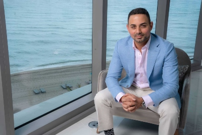

RossCo Real Estate
Our Residential Team
Jim Wiggles
jwiggles@RossCo.com
920-832-2428Django Rusty
drusty@RossCo.com
920-450-7436Sandy Blackwell
sblackwell@RossCo.com
920-585-9935Tiffany Quinlan
tquinlan@RossCo.com
920-380-9599
Jim Wiggles
Contact:
About Jim
My Mission: To serve my clients with the utmost level of care, skill, and knowledge during the process of buying, selling, or contemplating the idea of a real estate transaction. I love helping first time home buyers. Buying your first home can be one of the scariest things and most expense thing you have ever purchased. Let me help you make this journey more enjoyable. I have tons of other interests, from Snowboarding, hiking, to mountain biking. I love to learn new things and always interested in what is next. So lets get the next step going and give me a call.....
Django Rusty
Contact:
About Django
Django is a highly skilled Realtor who prides himself with an easy-to-approach persona and as a supremely organized professional. Django is a student of Wisconsin Real Estate, keeping his finger on the pulse of the market like few others do. His commitment, expertise and love for Real Estate has earned him the respect of sellers, buyers, builders and contemporaries alike. While typically focusing on the Jefferson and Western Waukesha County real estate markets, Django has participated in numerous real estate transactions through out the State of Wisconsin. Django has sat on the Jefferson County Board of Realtors for seven years and served as the twice, peer-elected President of the Board.
Sellers: When listing your property with Django, you will receive an aggressive and relentless, state of the art web and social media based marketing campaign - Django has never NOT been able to present his Seller with an Offer. Django understands the wording of Offer contingencies to the letter. He provides invaluable counsel in such matters. Django will keep you up to date on the sales process from Acceptance to Close.
Buyers: As a dedicated, full-time real estate professional, Django receives minute-to-minute updates through strategic networking with other agents, builders, Buyers and Sellers; he often knows of properties before they hit the market. This amounts to you having a better edge on competing buyers and a higher probability of both finding a home that matches your search criteria and negotiating successfully for that home.
Knowledge: In a fast-paced market, sometimes hours make all the difference between successfully negotiating for the home you have been looking for and a missed sale. Knowledge of the market, when to move on an offer and then moving quickly is key. Django is a student of the market; He keeps his finger of the pulse of the market and market trends like few others.Django and his wife own and manage a number of rental properties in the area and Django has used his skill in that market to help several Buyers invest and begin their own rental property portfolio. Before beginning his career in Real Estate, Django spent nearly a decade as a Territory Manager for Case Construction Equipment and then later, John Deere. Django is an aviation, boating and outdoor enthusiast, helpless coffee addict, devout fan of the Green Bay Packers and a proud Eagle Scout. When not practicing real estate, one might find Django and his wife, Jessica enjoying time with friends and family or exploring the great state of Wisconsin with their two dogs, Roxy and Sunny.
Sandy Blackwell
Contact:
About Sandy
With a background working in healthcare, I have taken my passion for helping others into my career as a Realtor®. I build trusting relationships with my easy going personality and find watching my clients achieve their goals as the ultimate reward. Buying and/or selling a home is complex, emotional and one of the largest financial events in life, but with me on your side, I am committed to ensuring the process is seamless and enjoyable. Growing up in Waukesha County has given me first-hand knowledge to serving Lake Country and it’s surrounding real estate markets. I remain on-top of the market trends and have access to resources to best serve you. Sarah Venes and Abby Tessar are known as The Venes Team. Experience, Integrity & Drive brought us together and becoming future sisters-in-law remains the base of our foundation. As a family-oriented team, our core values start with you at the forefront of everything we do and believe in. You come first, that's our promise. When you hire us, consider yourself an extension of our growing Family. When I am not serving my clients, you’ll find me spending time in the kitchen trying new recipes, taking my French Bulldog, Winston, for a walk in the neighborhood or exploring the community. Whether you’re a first-time home buyer, looking to upgrade, downsize or invest, I am committed to you every step of the way. It’s your move… let me help you make the right one.
Tiffany Quinlan
Contact:
About Tiffany
As one of the industry's top realtors since 2015, Tiffany specializes in guiding her clients through the ups and downs of the home buying and selling process. With her market knowledge and contract expertise, she turns what could be a stressful situation into a seamlessly executed, fun experience. In her free time, you'll likely still find her looking at houses and exploring neighborhoods but this time with kids in tow, or maybe chatting your ear off about the best food stops in town, or triathlon training to keep her mind in check. As a 2009 UW-Madison graduate, Tiffany's heart lies in Madison, and her work in the community reflects her love of the city.
Our Rural Team
Rhannda Timms
Rhannda Timms
rtimms@RossCo.com
920-841-3128Slater Ripkin
sripkin@RossCo.com
920-271-3462Jonas Medford
jmedford@RossCo.com
920-292-1958Juan Martinez
jmartinez@RossCo.com
920-428-7731
Contact:
About Rhannda
With a background working in healthcare, I have taken my passion for helping others into my career as a Realtor®. I build trusting relationships with my easy going personality and find watching my clients achieve their goals as the ultimate reward. Buying and/or selling a home is complex, emotional and one of the largest financial event’s in life, but with me on your side, I am committed to ensuring the process is seamless and enjoyable. Growing up in Waukesha County has given me first-hand knowledge to serving Lake Country and it’s surrounding real estate markets. I remain on-top of the market trends and have access to resources to best serve you.
Slater Ripkin
Contact:
About Slater
"HE IS HAPPIEST, BE HE KING OR PEASANT, WHO FINDS PEACE IN HIS HOME". "ES MUY FELIZ, SEA REY O CAMPESINO, QUIEN ENCUENTRA PAZ EN SU HOGAR".
Jonas Medford
About Jonas
From a young age, the entrepreneurial spirit has driven my direction in life and I knew that owning my own business and working in the real estate industry was my life’s passion. I own and operate a successful landscaping business that allows me to work with clients from every walk of life. Additionally, I understand real estate and the inner workings of how the industry works. At the age of 18, I dove into the real estate market and purchased my very first investment property, giving me an in-depth understanding of how real estate transactions are conducted and how important it is to understand the buying and selling process from start to finish. As a client, I knew I could provide a better real estate experience and that drove me to help others experience the best-in-class real estate experience. Don’t let my young looks fool you, my experiences as an entrepreneur and drive to help others achieve their goals is unmatched. If you need a realtor who knows the local markets, will give 110%, can break down barriers, and understands that I only succeed if my clients succeed, give me a call and let’s discuss your real estate needs.
Juan Martinez
Contact:
About Juan
Juan grew up as an avid hunter and fisherman in southern Wisconsin with his father. Those adventures turned to a passion and fascination with the land and the wildlife that called it home. That passion led Juan to attend UW Stevens Point where he majored in Wildlife Biology and Land Use Planning. After graduating Juan worked as a Wildlife Biologist and Project manager for a private conservation consulting and contracting company, where he planned, estimated and executed habitat management projects for landowners around the state. He then became the Regional Representative for Pheasants Forever covering the State of Wisconsin. At PF he worked with chapters and a team of Farm Bill Biologist to raise money in support of habitat projects, outdoor heritage events, conservation advocacy, public property acquisition, conservation grant writing and with the various farm bill programs. His knowledge, experience and passion for wild lands makes him the ideal advocate for his clients in buying and selling rural properties. He believes that the value of land is not just what it is today, but what it could be tomorrow. Testimonial Tree Testimonials:
Our Lakeshore Team
Carl Johnson
Carl Johnson
cjohnson@RossCo.com
414-359-1124Gwen Peckins
gpeckinsn@RossCo.com
414-364-5464- 
Sean Dumas
sduma@RossCo.com
414-359-8921Jeanette Barnett
jbarnett@RossCo.com
414-321-4578
Contact:
About Carl
As a lifelong Realtor, Carl has earned a reputation as a true professional, receiving both the Realtor Emeritus and Graduate, REALTOR Institute designations. Knowledgeable, highly ethical and treating customers and clients with understanding and respect. Carl also received the Special Recognition Award from the Racine Board of Realtors. Carl has served countless individuals and families with their real estate needs, both local and those relocating to the area from countries around the world. A lifelong resident of the area, Carl is comfortable discussing properties in Southeast Wisconsin and looks forward to assisting you with all of your real estate needs.
Gwen Peckins
Contact:
About Gwen
I am excited to work with you! Originally from Iowa, I now call the beautiful Coulee Region my home. With previous professional experience in logistics and coordination, I am well prepared to help you with your real estate needs. My commitment is to keeping you informed throughout the entire buying/selling process. I can't wait to start your next home adventure together!
EDUCATION Human Resources | Saint Mary's University of Minnesota B.S. Public Service and Administration in Agriculture | Iowa State University B.S. Agricultural Business | Iowa State University
Sean Dumas
Contact:
About Sean
very. Client. Special. That is the motto that I work by. My mission is to provide the most attentive, loyal, and client focused services. From first time homebuyers to investors and everything in between, you have my promise that my number one goal is to make your experience the best it can be. I will do so by keeping in mind the following principles, which are the most important part of what I do.
1. You, the client, will ALWAYS come first.
2. Honesty and Loyalty. Communication.
3. Fun. I realize this process can be hard at times. However, I always aim to have my clients and customers enjoy the process and enjoy working with me.
About Me: I grew up in Racine and have spent most of my life in SE Wisconsin. I have lived in Racine, Milwaukee, Kenosha, and Washington, D.C. I am married to an amazing wife and have 3 kids - Noa, Henry, and Elodie. I enjoy running, hiking, camping, traveling, and all things sports. Favorite Place I Have Traveled To: Amazon River, Brazil Favorite Sport: Soccer Favorite Camping Destination: Big Bend, Monongahela National Forrest, WV Favorite Hike: White Rock Falls Trail, Shenandoah National Park, VA
Jeanette Barnett
Contact:
About Jeanette
After spending some time in new construction, I quickly learned my passion was for both new and previously owned homes. When working for a builder, I gained immense knowledge of the home building process, from the ground up. I also learned home staging and interior decorating techniques that I offer free of charge to any client.As a Lake Country native, I have expertise in the Lake Country area along with surrounding counties. Not only did I grow up in the Oconomowoc area, I currently reside in Oconomowoc with my husband and baby boy. I have made it a priority to learn every market in the Metro Milwaukee area to give my clients the most accurate and important information to make the process as easy as possible. Overall, I have the knowledge and resources to make your home buying or selling experience a great one!